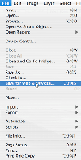
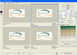

Creating Logos in Photoshop: Saving Your Document
We all know computers love to crash or batteries love to die at the worst possible time. This is why I suggest that you constantly save your document. When you are working on your document, save it as a .psd file. This will enable you to keep the layers that you have made so you can open the logo up later to work on it. I would suggest that you keep this file somewhere on your computer because many people come back and make changes to their logos later and this file name will let you edit the layers.
I assume that during this stage of your logo creation, you know what you are creating your logo for. Whether it is for the Web or for print, each function has a specific way to save the file.
If you are making your logo for a Web site, you need to save it specifically for the Web so the file gets compressed. To do this, go to "file" and then click on "save for Web devices." Once the window opens, click on the tab at the top that says "4-Up." This will show you four pictures of your logo that are different sizes. If you have a transparent background on your document, save it as a .gif. You can also save the file as a .jpeg if there is a photo in your logo, but I would suggest saving it as a .gif (unless it has an image in it) because it will take up less space on your site.
Otherwise, you can save your logo as a .jpeg, a .gif or a .tiff and send it to the printer for your documents and T-shirts.